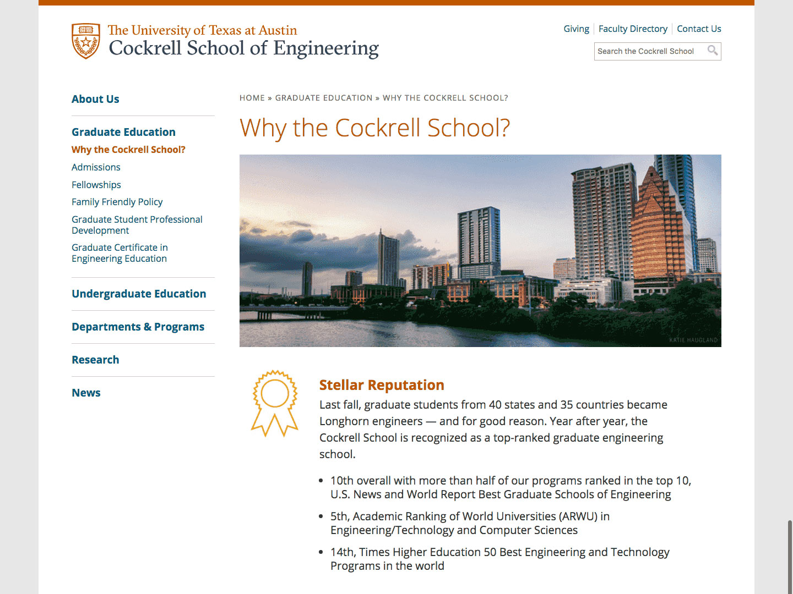

<div class="content-wrapper clearfix">

    <article class="content">

        <div class="row">
            <div class="col span_6">
                
            </div>
        </div>

        <div class="row">
            <div class="col span_6 center">
                <h1>Graduate Recruitment Campaign</h1>
                <div class="tagline">Targeted, mobile-friendly emails helped secure the best talent for our graduate programs.</div>
            </div>
        </div>

        <div class="row">
             <div class="col span_4">
                
            </div>
            <div class="col span_2">
                <h2>Project Details:</h2> 
                <p>Although Texas has a top ten engineering program, misconceptions about Texas sometimes keep students from the East and West coasts from considering UT Austin. After analyzing user profiles and uncovering these deterrents, we sent targeted emails to top prospective students to concisely sell UT Austin.</p>
                <p>The clear call-to-action leads to a newly-built <a href="http://www.engr.utexas.edu/graduate/why">webpage</a> with updated, easy-to-skim content to convince the student to apply.</p>
                <p>In the first year of this campaign, we saw an increase in the overall number of applications, as well as dozens of applicants who, based on our data, would otherwise not have considered Texas Engineering.</p>
            </div>
        </div>
        <div class="row"> 
            <div class="col span_2">
                <div class="">
                    <h2>My Role</h2>
                    <ul>
                        <li>Art Direction</li>
                        <li>Web Design</li>
                        <li>HTML/CSS Email Coding</li>
                    </ul>
                </div>
            </div>
            
        </div>

    </article>
</div>
